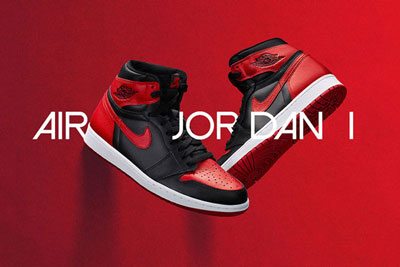

王朝序幕1984年Nike的销量并不是很好急需追求改变，便找到了初出茅庐的乔丹，虽然乔丹当时其实更想签约adidas，不过为了大局着想最终答应了Nike的请求签下了5年250万美金的合同，而为乔丹设计的第一款签名鞋便是Air Jordan 1。Air Jordan 1是以Air Force 1为原型设计的，除去了笨重的Air气垫改为新型Air Sole气垫，虽然当时人们并不看好这双鞋甚至认为丑陋，越来越多的配色释出人们逐渐发现了它的美，黑红禁穿也成为一时话题，殊不知已经拉开了乔丹鞋王朝的序幕。
Air Jordan 1的诞生也惹来了各种各样的争议和麻烦。公牛队的总经理罗德•索恩和乔丹经纪人法尔克聊道：“迈克尔是篮球运动员，不是网球运动员，过分强调个人而忽视集体不太好吧。”毕竟在那个年代，人们的印象中只有网球、拳击这样的个人项目才有专用器材，而一支篮球队的所有运动员都应该是同一着装。
不仅是队内管理层的不认可，联盟也开出了罚单。在那个球鞋只有黑或者白的年代里，黑红配色的Air Jordan 1实在有点花哨了，大卫•斯特恩便向乔丹开出了罚单，从1000美金一场涨到了后来的5000美金一场，耐克则自掏腰包，并且要求乔丹继续穿下去，他们也因此前后支付了上百万的罚款。正是这道禁令，成为了为耐克宣传最好的广告，耐克以此为灵感，推出了一个广告：一个大大的X，上面是一双三色鞋，接着是"禁止"的字祥。广告词为：“在1985年9月15号，耐克创造了一双革命性的篮球鞋，在1985年10月18号，NBA把它丢出了球场。幸运的是，NBA不能阻止你穿它。乔丹，耐克。”
大家都知道传奇设计师 Tinker Hatfield 对于 Air Jordan 系列的风靡做出了重要贡献，但他在第三代产品才接手，打造了同样经典的 Air Jordan 3。而 Air Jordan 1 的设计师是另外一位颇具才华的 Peter Moore，Peter 当时是 Nike 的创意总监，在 80 年代为这个初创品牌随后的大红大紫打下了坚实的基础。Peter Moore 同时也是 adidas 经典的 3 Bars Logo 的设计者，3 Bars Logo 三条杠塔形标志替换了三叶草标志，一直作为 adidas 的主标志沿用至今。
其他
我们都知道黑红配色的Air Jordan 1在31年前被禁穿。但那是真的吗？Air Jordan 1是一双一开始就发售各式各样配色的神秘之靴，为了获得品牌的历史发展和演变，我们必须追根溯源。随着事情的发展，如果他确定穿一双黑红配色的Nike 篮球鞋，Michael Jordan 每场可能或者一定会被罚款5000美元，这可以作为2011年发售的被禁穿Air Jordan 1 High 的证据。NBA制定的每场“穿着统一的规则”指出，“运动员不仅要穿着与运动服统一的球鞋，而且所穿球鞋还要与其队友统一。”那时候，黑红配色球鞋要比简单的黑白配色球鞋更加特立独行。也就是说，第一年担任NBA总裁的 David Stern “禁止此鞋踏入赛场（将它们扔出了赛场）。”虽然Nike 支付着罚单，但是传奇就像MJ 继续穿着这双鞋一样发展着。这个故事你听起来是不是很熟悉？这是一封由NBA 执行副总裁Russ Granik 写给Nike 副总裁Rob Strasser 的信，信中说道Michael Jordan 在1984年10月18号左右穿着的一双Nike 篮球鞋违反了联盟的规定和程序。
这里有很多问起需要探讨。其一，MJ 穿着黑红配色的Air Jordan 1 打了多少场比赛？Nike 真的支付了所谓的罚款吗？还有一个最大的问题：甚至黑红配色的Air Jordan 1 是第一双被NBA禁止的球鞋吗？不是，下面是原因。我经常与人探讨，事实上，一个提供了历史上Air Jordan 系列的详细图片的Instagram 上的bigbostrong 用户，同时还有来自澳大利亚的朋友，在inallairness.com上运营着著名播客的Adam Ryan 和 Aaron Stehn。还有他们的共同同事,运营bullsonparade.me的Adam Howes。他们都在做同样的事情，关注Michael Jordan和 Chicago Bulls 队史上丰富的历史事件。我们已经得知MJ 在菜鸟赛季穿的第一双鞋，经证实是已经被复刻的神秘之鞋—Nike Air Ship。据我所知，Jordan 穿过三种配色的Air Ship：白/自然灰，白/红和黑/红。黑/红版本的Nike Air Ship 才是真正被禁穿的球鞋，而不是Air Jordan 1。

没有照片表明Michael Jordan 曾经在NBA的比赛中穿着黑/红的Air Jordan 1。多年来我一直在分析这个神秘的事情，甚至曾经强烈要求Jordan 论坛提供Michael 穿着此鞋的图片或者视频。我已经看到各种独特的假设诸如1985年NBA 扣篮大赛，和Patrick Ewing的一对一，2005年关于Michael的纪录片“Just For Kicks”中的画面。然而这并没有表明NBA 会因为打破“着装统一规则”而继续警告Bulls 的超级球星和Nike 公司。参考信中的内容，那天是在1985年2月25日，全明星周末开始于10号。这也许说明第二次警告的确发生了，但是没有证据表明关于NBA 可能发布的任何罚单—这些我们也许可以在以后研究。